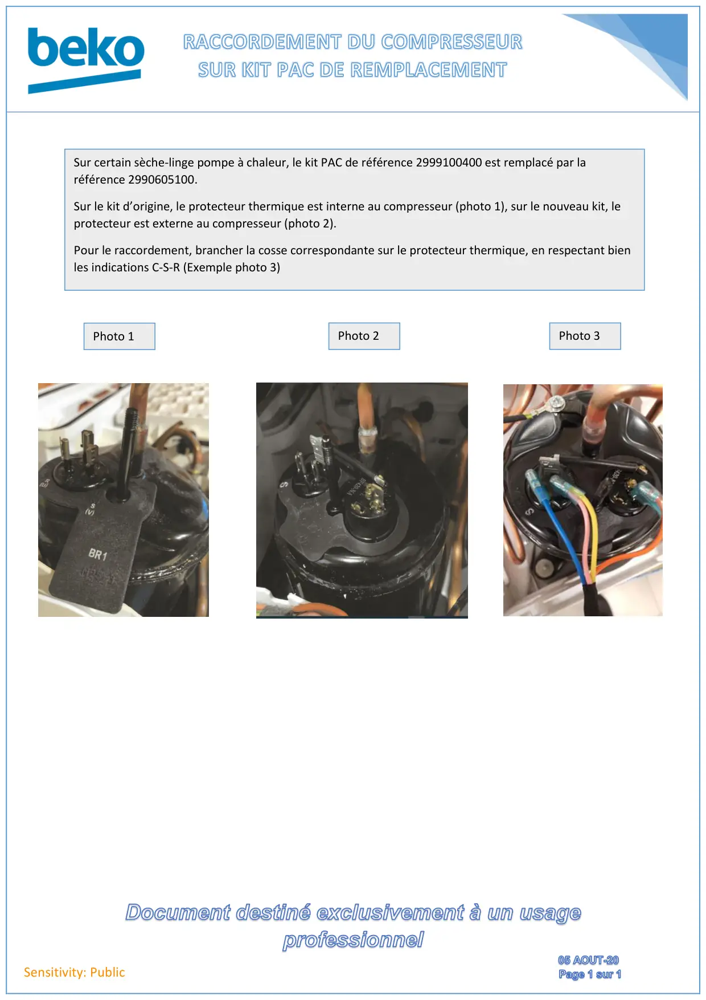

Branchement nouveau groupe PAC

Sensitivity: PublicSur certain sèche-linge pompe à chaleur, le kit PAC de référence 2999100400 est remplacé par laréférence 2990605100.Sur le kit d’origine, le protecteur thermique est interne au compresseur (photo 1), sur le nouveau kit, leprotecteur est externe au compresseur (photo 2).Pour le raccordement, brancher la cosse correspondante sur le protecteur thermique, en respectant bienles indications C-S-R (Exemple photo 3)Photo 1Photo 3Photo 2
1 / 1